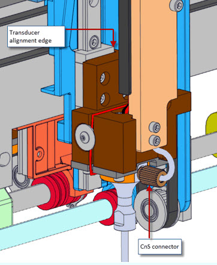
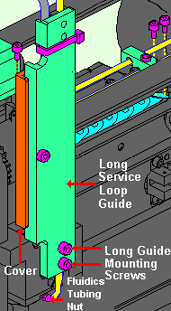
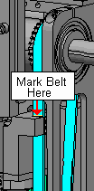

Replacing Ultrasonics CnS Transducer
This procedure describes how to replace the ultrasonics CnS transducer.
Replace the reagent pipettor transducer when a reagent pipettor transducer has been the cause of a failed:
- Ultrasonic Adjustment
- Ultrasonic Errors
- Level sense errors
- Wet / Dry Test
Use this procedure when replacing the original non-CnS transducer with a CnS transducer.
The CnS transducer is only compatible with the CnS reagent pipettor tubing.
Reference Graphic:

-
Prepare the instrument.
- Open the main upper right and upper left covers on the AU and verify that the interlocks are not bypassed.
- Remove the cover from the upper right electronics card cage.
- Bypass both the upper right and left cover interlock switches and
- Initialize the system.
-
Drain the tubing.
- From the Main Menu, select Diagnostics > Device Diagnostics > Digital Devices > Peristaltic and Vacuum Pumps.
- Enable the vacuum pump for the pipettor being serviced.
- Verify that the pipettor is directly over the wash tower.
-
Remove the fitting from the pipettor precision pump and allow the wash buffer to drain into the wash tower.
Caution: When draining wash buffer from the tubing, do not let fluid leak onto the instrument or any of the instrument components. When disconnecting the tubing, hold a dry towel at the in-line fitting.
- After the tubing is drained, disable the vacuum pump and exit the Digital Devices screen.
- Remove power from the motors using the upper switch on the Power Distribution PCB labeled "All DC power"
-
Remove the ultrasonics transducer.

- Manually move the pipettor carriage fully forward.
- Remove the cover from the long service loop guide (one screw).
- Remove the long service loop guide (two screws).
-
Remove the buffer supply tubing from the transducer.
- Be prepared with a paper towel to capture the small amount of buffer that drains from the probe.
- Use a 1/4-inch open-end wrench to loosen the fluidics tubing nut at the transducer. If the tubing twists with the nut when the nut is rotated, then the nut is seized. Do not force the nut. Instead, proceed to the next steps and remove the entire transducer assembly, rotating the assembly (while holding the tubing in a fixed position) to remove the nut.
-
Mark the z-belt above the upper edge of the belt grip. This mark is used when installing the replacement transducer.

- Remove the z-belt from the belt grip.
-
Remove the four metric mounting screws (2.5-mm hex-wrench) that secure the transducer housing to the linear slide.
Caution: Hold on to the transducer while removing the last mounting screw.
- Remove the old transducer data label from the pipettor gantry.
-
Install the CnS transducer.
- Slide the transducer belt grip over the z-belt, with the grip just below the mark on the belt.
- Raise the linear bearing near the top of the slide. Insert one of the metric mounting screws into the transducer. Start the screw, but do not tighten it.
- Insert the remaining three metric mounting screws one at a time, until all screws are started.
- While applying pressure to the transducer alignment edge (refer to the reference graphic), tighten all four screws.
-
Confirm that the transducer is mounted tight and straight to the housing.
Note: After screws have been tightened, probe straightness can be confirmed by lowering the pipettor tip into the wash tower. Manually move the probe to the wash nozzle. Watch the probe as it enters the wash nozzle and tower, and confirm that the pipettor does not move off to one side.
- Connect the service loop cables to the transducer and the transducer heater (two connectors).
-
Attach the CnS fluidic connector to the transducer and tighten until the connector clicks.
The clicking noise means that the connector is set to the correct torque.
- Attach the long service loop guide cover (one screw) and the long service loop guide (two screws).
- Restore power to the motors using the switch on the Power Distribution PCB labeled 'All DC power (except CPU and reagent coolers)'.
- Initialize the system.
-
Test and complete the installation of the reagent pipettor CnS transducer.
- Prime the reagent pipettor once, and verify that there are no leaks.
-
Adjust the transducer temperature.
Note: Refer to the RP: Adjusting Ultrasonics CnS Transducer Temperature procedure.
-
Verify operation of the new transducer.
Note: Refer to the RP: Adjusting Ultrasonics CnS Transducer Voltage procedure.
-
Confirm the reagent pipettor alignments to all intersecting devices. Align and adjust as needed.
All pipettor z-alignments must be verified by performing a manual alignment.Note: Refer to the RP: Aligning Reagent Pipettor procedure.
-
Calibrate the pressure monitoring for each probe that has been replaced.
Select Diagnostics > Device Diagnostics > Analog Devices > Sensor Calibration > Pressure.
-
Perform 50 reps of the Dry / Wet test to verify the operation of the transducer.
Note: Refer to the Tests: Performing Ultrasonics Level Sense Test procedure.
- Remove interlock bypass, close the instrument covers, and initialize the system.
-
Verify system operation.
-
Perform system verification as stated in the Verification of Service Repair document .
Refer to the Admin: Verification of Service Repair document.
-
Perform system verification as stated in the Verification of Service Repair document .